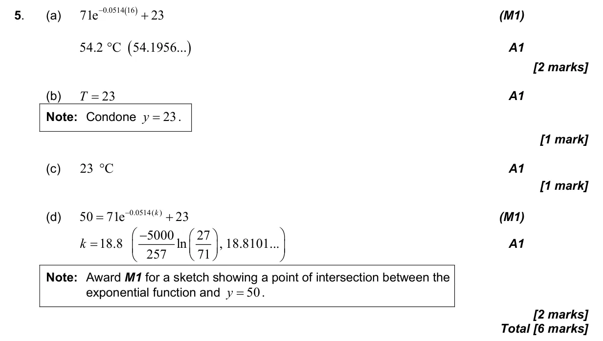

2.5 Modelling with linear, quadratic, exponential, power, cubic and sinusoidal functions2.2 Functions, notation, domain, range and inverse as reflection2.4 Key features of graphs
Question

Markscheme

6 marks - Nov P1 TZ0 - Mathematics: Applications and Interpretation SL